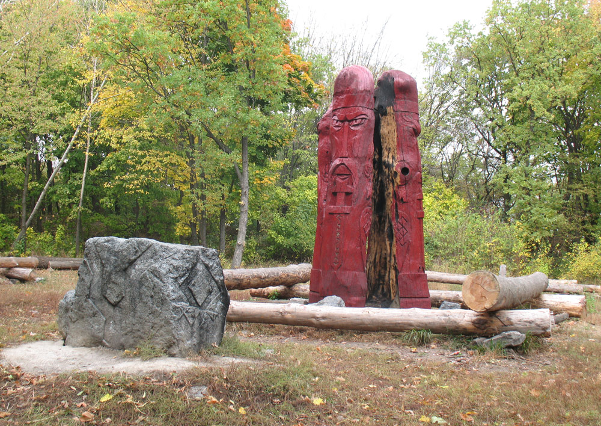
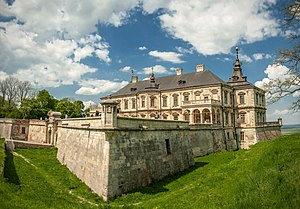
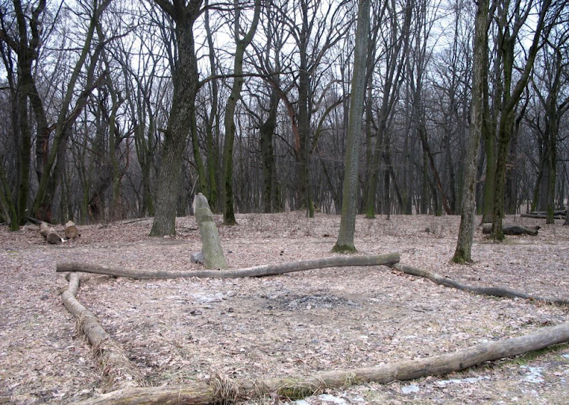

Лиса Гора, Київ.
Таємнича атмосфера язичництва та могутня краса природи. Ще з часів Київської Русі ця місцина була тісно пов’язана з чаклунством і зіллєварінням. Дерев’яний ідол Перуна та багатостолітні дерева уже тисячі років викликають численні запитання. За легендами трави, які там ростуть, відьми використовували для своїх заклинань. А у ніч з 30 квітня на 1 травня відбувався шабаш. Те, що Лиса Гора дійсно містичне місце неодноразово доводили археологічні знахідки. Коли на Русі ввели Християнство, сюди пересилились язичники, тому в підземеллях було знайдено багато стародавніх книг, коштовностей та магічних знаків. Кажуть, що на Лисій Горі бродять душі, тому там було так багато незрозумілих смертей, а за часів Російської Імперії, солдатам, яких відправляли туди на Лісогірський форт, наказували не лякатись дивних звуків та створінь.
Підгорецький замок
Замок збудували наприкінці 1630-х років. Його власниками були коронний гетьман Станіслав Конєцпольський, Вацлав Жевуский, князі Сангушки. Палац був розкішним місцем проживання, проте потім в ньому відкрили лікарню. Всім, кому доводилось переночувати в стінах Підгорецького замку, являвся привид напівпрозорої примари у білому. Пацієнти туберкульозного санаторію, починаючи з 1949 р., теж розповідали про привида. А самі князі Сангушки навіть залишили записи про зустріч з примарою: «Часто бувало таке, що двері на другому поверсі палацу відкривалися самі собою, а майже невидима фігура жінки у білій пишній сукні щоночі блукала то по одній, то по іншій кімнаті». Хто ж ця пані, яку бачили стільки свідків? Є припущення, що це молода дружина Вацлава Жевуського Марія, вбита чоловіком через ревнощі. Її тіло вбивця заховав десь у замку, можливо замурував у стіну, відтоді пані не має спокою та блукає своїми колишніми володіннями.
Поляна Громовище
Ця місцина, ніби магніт, притягує до себе грозові блискавки. Місцеві всіляко оминають її в непогоду, щоб не поповнити ряди загиблих від удару небесним струмом. За словами очевидців вночі на галявині виникає дивне світіння. Цікаво, що в більшості в цьому місці погіршується фізичне самопочуття – тиск, болі і навіть настрій. В народі це місце звуть «гніздо блискавок». А вчені пояснюють аномалію заниженим електричним опором певних ділянок земної кулі. Це так звані «місця сили», на яких раніше будували капища, поклонялись богам, приносили жертви та бачили чудеса. Отож не дивно, що у 1990-х роках під час археологічних розкопок на Житомирщині, тут були знайдені кам’яні блоки, римські та боспорські монети. Настільки популярним було це капище, привертаючи увагу іноземних гостей. Спробуйте відвідати це місце сили, якщо не боїтесь, звичайно!